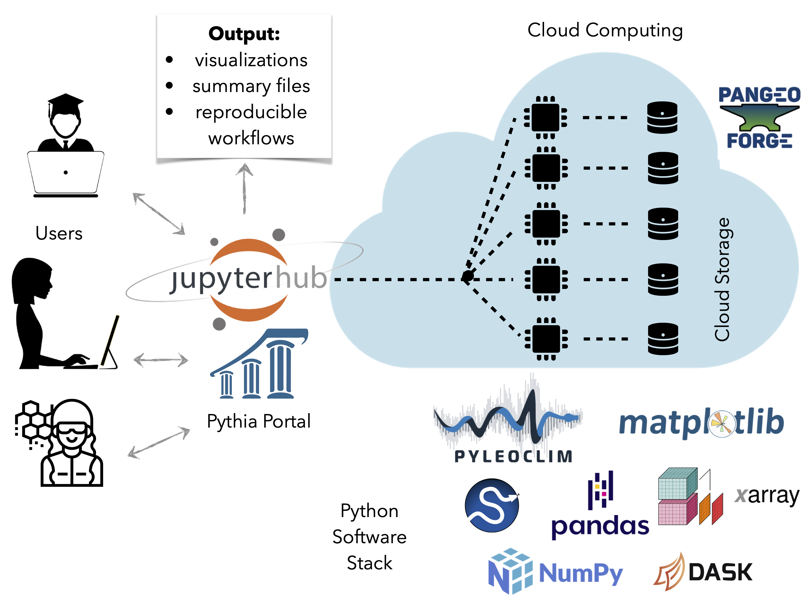

Research Hub¶
{kind=link}
The research hub sunsetted on August 31st 2024. This page is for archive information only.¶
What is the hub and who is it for?¶
If you have access to a decent internet connection, you can use the LinkedEarth JupyterHub for your research. A JupyterHub is a curated computational environment that runs in the cloud, and makes it possible to provide advanced data science access to any user in the world. Our hub is designed for people of all levels of Python proficiency intending on using Pyleoclim in their own work, including, but not limited to, paleoclimate data-model comparisons. Several users may find the LinkedEarth hub an appealing place to do research, for instance those who:
cannot run computations on their own laptop, OR
do not want to install Python and Pyleoclim on their machine, OR
do not have access to a computer cluster, OR
want to perform complex workflows on large Analysis-Ready, Cloud-Optimized datasets (e.g. PMIP model output)
Though the environment is provided and curated by LinkedEarth, the contents of your hub folders are entirely private. We do recommend copying over precious data once you are finished with your analysis, just to be safe.
The hub is entirely free to use but comes with strings attached:
even in the Cloud, resources are not infinite, and we cannot guarantee high performance for large number of simultaneous users
we cannot maintain an infinitely complex Python environment (though we will work with users to accommodate reasonable requests)
we do not know at this stage how long this service will exist. Assume for now that it will sunset in 2024, unless we find a more perennial source of funding. Enjoy it while it lasts!
Code of conduct¶
Use of the LinkedEarth Hub implies that you subscribe to the LinkedEarth code of conduct which pretty much amounts to being a decent human being. It also requires that you:
pledge to only use this resource for academic work in the climate and paleo-sciences.
refrain from using the hub as storage space for large files (>100Mb). Please check with us if you need to do so temporarily.
pledge to properly cite all software and computational resources used when you publish any work done through this platform. Yes, software is citable too!
Email us any paper/abstract that used the hub. We want to know what sparks you make with this!
How to sign up¶
To sign up, please fill this form, which usually takes 1-2 business days to review and approve. Upon approval, you will be asked to join the LinkedEarth organization, which is the only way to access the hub. Don’t worry, this does not come with spam emails.
Hub access¶
Once a registered member, you can login here. Upon login, you will be asked to choose between 4 server options. The “Small” server (5GB RAM, 2 CPU) option should be sufficient for most applications, though you may need the larger ones when processing large model output. We recommend using as few resources as you need to make room for other users - currently 10 simultaneous users are supported. Please start small and only ramp up if needed. Be warned that it takes a few minutes to build the server ; this is entirely normal, but you should not expect instant access upon startup. The server will automatically shut down after an inactive period of ~ 1 day; if it does, don’t worry, your work is safe and you will find it as you left it upon logging back in.
Data privacy & sharing¶
Your work on the hub cannot seen by other users, though it is accessible to LinkedEarth administrators to ensure proper use and help when needed. All users have a folder called shared in their home directory. This is a read-only directory - you cannot write to it, but you can access and read from it. If you want to tinker with the files in this directory, you need to copy them to your own directory first. For more details see the hub documentation.
Tutorials¶
There are various ways to get acquainted with Python in general and Pyleoclim in particular:
Self-paced tutorials to learn basic Python, including the scientific Python ecosystem (NumPy, SciPy, Jupyter, Matplotlib, Pandas, Cartopy, GitHub).
Pythia Foundations, a community learning resource for Python-based computing in the geosciences.
Self-paced PyleoTutorials to learn how to wield Pyleoclim.
If you are a LiPD user, you can use pyLiPD to open and manipulate the files. You can also try our self-paced pyLiPD tutorials.
PaleoBooks, a collection of Jupyter notebooks illustrating the scientific use of software libraries maintained by LinkedEarth. This collection will see rapid growth in 2022/2023, and will be designed for hub users. If you want the LinkedEarth team to develop notebooks that mimic the sort of analysis you might want to do, please request them on Discourse <https://discourse.linked.earth/c/science> or open a GitHub issue. No one is here to scoop your ideas; we will just try to provide solutions to your problems to the best of our ability and in maximally re-usable ways.
For details on further training opportunities and general ways to get help, please see the Community page.
Support¶
This research hub is supported by NSF grant ICER 2126510 from the EarthCube program.